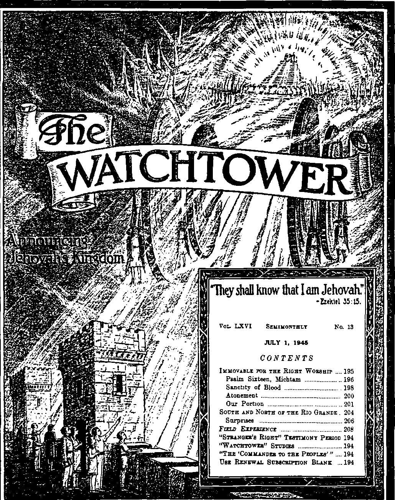

’■whf* J1'..-’.•a*-
Published Semimonthly Bt
WATCH TOWER BIBLE & TRACT SOCIETY 117 Adams Street - - Brooklyn 1, N.Y., U.S.A.
Officers
N. H. Knorr, President W. E. Van Amburgh, Secretary “And all thy children shall be taught of Jehovah; and great shall be the peace of thy children.” - haiah 54:13.
THE SCRIPTURES CLEARLY TEACH
THAT JEHOVAH is the only true God and is from everlasting to everlasting, the Maker of heaven and earth and the Giver of life to his creatures; that the Logos was the beginning of his creation, and his active agent in the creation of all other things, and is now the Lord Jesus Christ in glory, clothed with all power in heaven and earth, as the Chief Executive Officer of Jehovah;
THAT GOD created the earth for man, created perfect man for the earth and placed him upon it; that man willfully disobeyed God’s law and was sentenced to death; that by reason of Adam’s wrong act all men are born sinners and without the right to life;
THAT THE LOGOS was made human as the man Jesus and suffered death in order to produce the ransom or redemptive price for obedient ones of mankind; that God raised up Jesus divine and exalted him to heaven above every other creature and above every creature's name and ciothed him with all power and authority;
THAT GOD’S CAPITAL ORGANIZATION is a Theocracy called Zion, and that Christ Jesus is the Chief Officer thereof and is the rightful King of the world; that the anointed and faithful followers of Christ Jesus are children of Zion, members of Jehovah’s organization, and are his witnesses whose duty and privilege it is to testify to the supremacy of Jehovah, declare his purposes toward mankind as expressed in the Bible, and to bear the fruits of the Kingdom before all who will hear;
THAT THE OLD WORLD ended in A. D. 1914, and the Lord Jesus Christ has been placed by Jehovah upon his throne of authority, has ousted Satan from heaven and is proceeding to the establishment of the "new earth” of the New World;
THAT THE RELIEF and blessings of the peoples of earth can come only by and through Jehovah’s kingdom under Christ, which has now begun; that the Lord’s next great act is the destruction of Satan’s organization and the complete establishment of righteousness in the earth, and that under the Kingdom the people of good-will that survive Armageddon shall carry out the divine mandate to “fill the earth” with a righteous race.
ITS MISSION
THIS journal is published for the purpose of enabling the people to know Jehovah God and his purposes as expressed in the Bible. It publishes Bible instruction specifically designed to aid Jehovah's witnesses and all people of good-will. It arranges systematic Bible study for its readers and the Society supplies other literature to aid in such studies. It publishes suitable material for radio broadcasting and for other means of public instruction in the Scriptures.
It adheres strictly to the Bible as authority for its utterances. It is entirely free and separate from all religion, parties, sects or other worldly organizations. It is wholly and without reservation for the kingdom of Jehovah God under Christ his beloved King. It is not dogmatic, but invites careful and critical examination of its contents in the light of the Scriptures. It does not indulge in controversy, and its columns are not open to personalities.
Yxarlt SUBScamioM Paics
United States, *1.00; all otber countries, ILSO, American currency; Great Britain. Australasia, and South Africa, Be American remittances should be made by Postal or Express Money Order or by Bank Draft. British. South African and Australasian remittances should be made direct to the respective branch ofllcea. Remittances from countries other than those mentioned may be made to the Brooklyn office, but by International Postal Money Order only.
Foreign Offices
British 34 Craven Terrace. London, W. 2. England Avstrsloalais _______ 7 Beresford Road, Stratbfield. N. S. W., Australia South African - ■ - Boston House, Cape Town. South Africa
Indian ,,, ,, ....., 187 Love Lane. Bombay 27. India
Please address the Society In every case.
Translations of this journal appear In several languages.
ALL SINCERE STUDENTS OF THE BIBLE who by reason of infirmity, poverty or adversity are unable to pay the subscription price may have The Watchtower free upon written application to the publishers, made ones each year, stating the reason tor so requesting it. We are Siad to tbus aid the needy, but the written application once each year 1 required by the postal regulations.
Notice to Subscriber!: Acknowledgment of a new or a renewal subscription will be sent only when requested. Change of address, when requested, may be expected to appear on address label within one month. A renewal blank (carrying notice of expiration) will be sent with the journal one month before the subscription expires.
Printed In the United States of America
Entered as eeeond-ctase matter at the port office at Brooklyn. N. 7., under the Act of March S, 1879.
“STRANGER’S RIGHT” TESTIMONY PERIOD
August is the month of the “Stranger’s Right” Testimony Period. During this month all lovers of right and truth will be diligent to accord to the “stranger” class the right to hear the Word of God and to have help in understanding it, by bringing to them the Kingdom message. They will specialize on the combination of the book “The Kingdom Is at Hand” and the booklet released for this period, The “Commander to the Peoples", offering this on a contribution of 25c. Many of our Watchtower readers may view themselves as “strangers” and yet want to join in taking part in the spread of this wonderful message. Let such be informed that it is their God-given right to have a part therein. So let all such write us for information, and we will link them up with a group of veteran publishers active in the work for companionship. As a finishing touch to your efforts during August, please submit us a report of what you do.
"WATCHTOWER” STUDIES
Week of August 5: “Immovable for the Right Worship,” fl 1-20 inclusive, The Watchtower July 1, 1945.
Week of August 12; “Immovable for the Right Worship,” fl 21-40 inclusive, The Watchtower July 1, 1945.
THE ‘COMMANDER TO THE PEOPLES’"
The totalitarian-rule fiascos and the global war have focused the world’s attention upon commanders for humankind. But all official appointments and popular selections of commanders have ignored and by-passed the indispensable one. You will be grateful, therefore, when you see this One identified and championed, by reading the new Watchtower publication, The “Commander to the Peoples”. This is a 32-page booklet, with attractive paper cover. Before its general distribution in a coming special Period, you may procure your personal copy by remitting a contribution of 5c to this office.
USE RENEWAL SUBSCRIPTION BLANK
The blank sent you one month before expiration of your Watchtower subscription should be filled out and returned to. the Brooklyn office or to the Branch office in the country where you reside. Servants in the companies, and individuals, when sending in renewals for The Watchtower, should always use these blanks. By filling in these renewal blanks you are assured of the continuation of your Watchtower from the time of expiration, and without delay. It will also be a great help if you sign your name uniformly, and note any recent change of address, on the renewal slip.
Vol. LXVI July 1, 1945 No. 13
“So then, my beloved brethren, become ye steadfast, immovable, superabounding in the work of the Lord at all times, knowing that your toil is not in vain in the Lord"—1 Cor. 15:58, Rotherham.
JEHOVAH is the great refuge in the time of danger. The original Life-giver, he is also the Preserver of life and, in a miraculous way, the Restorer of life. Every sensible person wants life, and especially so if he has a set purpose and a mission in life to fulfill. When, therefore, his life is endangered by bloodthirsty enemies that oppose his mission, and when Iiis own means of defense seem unequal to the situation, it is most reasonable for him to flee for refuge to the mighty Life-giver, who has sent him on his mission. This does not mean a bodily flight to any location, because, when hemmed in by enemies, he may be unable to remove himself from the danger zone. But fleeing to the great Preserver of life is accomplished by looking to Him under the circumstances, appealing to Him for help and preservation, and putting the keeping of ourselves entirely in His hands and ascribing all deliverance to Him. Such taking of refuge in Him must be accompanied by our refusal to compromise with the enemies. Instead, we must faithfully keep our integrity toward Jehovah God and hold fast to our mission from Him.
’ The enemy effort, and particularly the effort of the adversary, Satan the Devil, behind the scenes, is to move the persecuted and pursued one away from faith and devotion to the true God. But the one who makes Jehovah his refuge continues to worship and serve him, and remains immovable for Jehovah’s side of the paramount issue, Who is the God whom all the universe must obey? Regardless of immediate consequences, the one abiding in Jehovah will not move over into the enemies’ camp and worship their gods. By God’s permission, the enemies may take away such one’s present life. But the faithful worshiper of the true God knows that the Almighty God is his refuge and that in Him the right to future life in the New World may rest beyond the power of the enemies. In due time the great Restorer of life can bring him forth from the dead
1. Wby should we flee to Jehovah for refuge, and bow?
2. What is the adversary’s real effort, and. knowing what, should we remain immovable?
• and bless him with absolute peace, security and pleasures for evermore.
’ The question of the right worship has always been a matter of controversy since the day that man and woman were driven out of the garden of Eden. ■ This creation, the earth, is properly the place for 1 human creatures to worship the Creator. The wicked adversary, Satan the Devil, would try to obliterate Jehovah’s worship from the earth and to keep it out 1 and thus defeat the purpose for which the earth was created. On the other hand, the Creator would most assuredly see to it that his purpose in making this earth is realized by keeping alive his true worship among those men that feared him and came to him as the true and almighty God. Naturally Satan would try to move such men away from worshiping Jehovah and into the practice of religion. By practicing religion they could imagine they were worshiping the true God, but would in reality be worshiping the Devil and bringing reproach on God’s name. If the outward allurements of religion are not strong enough to pull the worshiper of Jehovah aside, then the adversary could stir up persecution ’ by the religionists, to put him in fear and to make him violate his own conscience by ceasing from Jehovah’s worship for the sake of relief from persecution and death at the enemies’ hands. But in Satan's continuous endeavors in all centuries to make all human creatures go in the way of Adam and Eve by stepping aside from Jehovah’s worship, he has failed, beginning with martyred Abel. Modern examples in lands which have lately been liberated from Nazi-Fascist totalitarian control have demonstrated very forcefully that the adversary continues to fail in this day.
4 The greatest example of all time of immovableness for the pure worship of Jehovah was that of “the man Christ Jesus”, the beloved Son of Jehovah God. He left this example for his followers, because they were due to suffer as he did on this earth.
3. Why haa the right worship been a controversial question since Eden’ and in what way have Satan's endeavors failed?
4. Who was the greatest example for immovableness for right worship■> and why Is Psalm sixteen of present interest to us?
195
The failure of the adversary to turn faithful men away from the worship of Jehovah, even under religious persecution and martyrdom, was exemplified in the case of David, the shepherd-warrior. David prophetically foreshadowed Christ Jesus and his followers on earth. David’s decision for all time for right worship, which decision pictured that of Christ Jesus and his followers to worship and serve no other God than Jehovah, was firmly expressed in one of his songs, Psalm sixteen. This psalm becomes of present interest to us, chiefly because of the adversary’s efforts to destroy Jehovah’s worship from the face of the earth by means of Nazi-Fascist-Vatican-totalitarian means. Such efforts are due to come to their flower in the postwar international “new order’’. A study of Psalm sixteen will help us not only to see its marvelous fulfillment proving that Jehovah God’s Word is true but also to put us on guard against the wily design of the Devil and to resist him and remain true to the right side.
PSALM SIXTEEN, MICHTAM
* Even the old extant manuscripts of the Hebrew Bible show Psalm sixteen with the heading, namely, “Michtam relating to David.” The earliest Bible translation, the Greek translation found in the Sep-tuagint (LXX), translates that heading, “An inscription for a pillar. By David.” This heading serves to remind us of the importance of the psalm as being something that should be carved or engraved on a monument so as not to be rubbed out, but always ready for reference by the worshiper of Jehovah God. The Son of God descended according to the flesh from David, being born in David’s own birthplace, Bethlehem. In Psalm 110:1 David prophetically spoke of Christ Jesus as his “Lord”, calling him “my Lord”. Christ Jesus was called also “the Son of David”, a son not merely as to the flesh but primarily as to being the Heir of the Kingdom covenant which Jehovah God made with King David. These facts stamp the psalm as being prophecy relating to the Greater David, Christ Jesus, and also to his followers. If there is any question on the matter, it is settled for us by the inspired apostles Peter and Paul, both of whom quoted from this psalm and applied it to Christ Jesus. (Acts 2:25-36 and 13:35-37) Thus we are enabled to “rightly divide” or rightly apply the Word of God, making comparison of the correct facts of history with the prophecy in order to get the truth.
• With a suddenness the psalm begins with an appeal: “Preserve me, 0 God; for in thee do I take refuge.” (Ps. 16:1, Am. Stan. Ver.) The one that is represented as thus crying out is not some religious
5. What is the purpose of the beading of this psalm? and bow do we know to whom It applies?
6. With whose appeal does this psalm open up? and what caused such an appeal to be expressed? priest standing before a man-made altar and chanting these words as a ritual, but is an immovable worshiper of Jehovah God, who is threatened with destruction by those who religiously worship other gods than Jehovah. For a long time David was placed under circumstances that caused him thus to cry out. However, it was not merely these circumstances that moved him to utter this golden psalm; it was the spirit of God acting upon him that guided him to this utterance amid such circumstances. Concerning this, David himself confessed, saying: “The spirit of the Lord spake by me, and his word was in my tongue.” (2 Sam. 23:2) David’s words thereby became a prophecy, that could stand being carved upon a monument, to let the test of time prove their prophetic truthfulness.
* David was anointed with oil by Jehovah’s prophet Samuel to be king over Israel; and the spirit of God came upon him to prepare him for his mission as king of Jehovah’s typical Theocracy. But this did not make David immune from enemy assaults. Rather it made him the special target of the Devil and of all the enemies of Jehovah and his Theocratic Government. King Saul, who believed in religious sacrifices rather than obedience to God, became jealous of David’s military exploits. He yielded to the demoniac impulse to pursue David to destroy him and thus prevent his becoming king over Saul’s people, the nation of Israel. Under pursuit, and being practically in the hand of his persecutors, David called upon his God for preservation. He put no reliance upon human leaders or symbols for protection. David made God his hiding-place, because he knew that God is Almighty, the title God meaning mighty one.
‘ Completely matching the Davidic pattern, Jesus, who was Christ because of being anointed with God’s spirit, was in line for the kingdom of God. He preached: “The kingdom of heaven is at hand.” At the same time, in his day, there were those religious leaders who thought themselves to be the “children of the kingdom” and the ones, therefore, who were charged with building the kingdom as God’s instruments. But they refused to recognize that Jehovah’s anointed King was in their midst, because he came not with outward show and did not exalt them and approve their religious practices. They persecuted him by all manner of means, seeking not only the ruining of his good reputation but also the destruction of his person, thus to prevent his becoming King. Christ Jesus cried out to God Jehovah, not simply for the preservation of his person until his anointed mission should be finished, but mainly for divine grace to maintain his integrity toward God
7. Bow did David become the target of demoniac assaults? and why did he fly to God for preservation?
8. In this respect, how did Jesus match David’s pattern? in vindication of God’s name. As it is written: “AVho in the days of his flesh, when he had offered up prayers and supplications with strong crying and tears unto him that was able to save him from death, and was heard in that he feared; though he were a Son, yet learned he obedience by the things which he suffered; and being made perfect, he became the author of eternal salvation unto all them that obey him.”—Heb. 5: 7-9.
’True followers undergo, like‘Jesus, the experiences of David under religious persecution. They have been begotten of the spirit of God and been anointed with His spirit to preach the good news of His kingdom. They are in line for the Kingdom as joint-heirs with Jesus. Their mission upon earth is to represent the Kingdom faithfully. Hence they must uphold Jehovah’s side of the issue of universal domination by holding true to His sovereignty and obeying Him rather than men. But the religionists, who wrongfully claim the promises of God and the inheritance of his kingdom, yield themselves as instruments of the demons to persecute these faithful witnesses of Jehovah and followers of Christ Jesus. They threaten these continually with destruction, and subject them to opposition, injustices and oppression. The only refuge of these is in Jehovah, the God of Jesus Christ; and to God they cry for preservation.
10 "0 my soul, thou hast said unto Jehovah, Thou art my Lord: I have no good beyond thee.” (Ps. 16: 2, Am. Stan. Ver.) In such words the psalmist describes what he says to Jehovah God. In the version quoted, the words "0 my soul" are added to help out the sense of the words, “thou hast said unto Jehovah”; but in some ancient manuscripts in Hebrew the reading is: '1 have said to Jehovah.” The Sep-tuagint, the Syriac and the Vulgate Versions of the Scriptures read that way also. But what is it that David says to Jehovah and represents Christ Jesus and his followers as saying under persecution? This: that Jehovah God is their Sovereign Lord, the One who owns them and is their Master and whom they must and will obey. Even amid persecution they say, out of their own personal choice: “Thou art my Lord.” Here the words “my Lord” are one of the 134 cases of where the ancient Hebrew sopherim or scribes changed the text from its original reading: "Thou art my Jehovah”; evidently to avoid the idea of being too familiar with the Most High God.
12 However, Christ Jesus and his followers are not ashamed to have Jehovah’s name called upon them. Jesus on earth always confessed: "I am come in my Father’s name.” (John 5:43) He refused to be entitled “good”, saying: “There is none good but one,
9. How do Jesus’ followers likewise undergo David’s experiences?
10. In verse 2 wbat does David represent Jesus and his followers as b&ying?
11 In what way is It true. “I have no good beyond thee’*? that is, God.” (Matt. 19:17) Hence Christ Jesus and his disciples acknowledge that they have no good, no goodness, no well-being, except in Jehovah alone. There is nothing, therefore, that we can contribute to God; but it is a great privilege for us to be given the opportunity to share in the vindication of his name. To whom else, then, can we fly for refuge and well-being save to Jehovah God, the inexhaustible Source of every good and perfect thing!
“ The real worshiper of the one true God finds no pleasure in the religionists of this world, but in those consecrated to God and who are excelling in praising him. Hence the psalmist under religious persecution says: “As for the saints that are in the earth, they are the excellent in whom is all my delight.” (Ps. 16: 3, Am. Stan. Ver.) Likewise, today, the King Christ Jesus at the temple judges the professed people of God and finds pleasure only in the faithful remnant of his “body” members and their companions of good-will. All these seek to render holiness unto Jehovah God by fulfilling their consecrations to him. Now, in expression of his delight in them, Jesus bestows upon them the privilege of possessing the gospel of the Kingdom and proclaiming it to the ends of the earth. And he surrounds them with the protection of his holy angels, who accompany him at the temple. He withholds no good thing from them; but the glorious light of the glory of God which he receives from on high he reflects upon them that they may arise and shine for the enlightenment of the bedarkened people.
21 Next the psalmist, picturing the anointed servants of God, shows his attitude toward the religionists, who draw near to God with their lips but their hearts are far from him and who teach the doctrines of demons and the traditions and precepts of men. He says: “Their sorrows shall be multiplied that hasten after another god [(margin's reading) that give gifts to another]: their drink offerings of blood will I not offer, nor take up their names into my lips.” (Ps. 16:4) By this stated resolve David uncovers the real intent behind the devilish persecution leveled at the worshipers of Jehovah, namely, to drive them away from Him in bitterness and lack of faith and to turn them to the religious worship of the Devil’s organization and its gods or mighty ones. David pointed out this covert purpose of the Devil in these straight words to his persecutor, King Saul, saying: “Now therefore, I pray thee, let my lord the king hear the words of his servant. If the Lord have stirred thee up against me, let him accept an offering; but if they be the children of men [that have stirred thee up against me], cursed be they
12. In whom doe* the antitypicai psalmist And delight, end how does be show it?
13. (a) What did David next say concerning the religionists, and what was bis resolve? (b) What did he thus expose to be the Devil's purpose in persecution, and how did David defeat it? before the Lord; for they have driven me out this day from abiding in the inheritance of the Lord [Jehovah], saying, Go, serve other gods.” (1 Sam. 26:19) But David defeated the persecution of the Devil through his religious dupes. Never did he renounce Jehovah God to go and serve the gods or mighty ones of Satan’s world organization.
“Likewise Christ Jesus, both in the mount of temptation and also during the years of persecution that followed, refused to fall down and worship Satan and thereby hasten after another god besides Jehovah, to give to such false god the gift of his devotion and service. Great persecutions were foretold by Jesus to come upon his faithful followers at the end of this world. But these worshipers and witnesses of Jehovah have foiled the malicious purpose of Satan the Devil to move them away from the right worship and to make them hasten after another god, to wit, Satan, “the prince of the demons.” We say this because the ulterior purpose behind, the conspiracy of the totalitarian powers, the Nazis, the Fascists, and the Roman Catholic Hierarchy and fellow religionists, was not primarily to destroy only democracy. Their ultimate goal was to wipe out the worship of Jehovah from the earth by destroying his witnesses and silencing their loudly proclaimed message of the Kingdom. But now the coming forth of Jehovah’s witnesses from the furnace of persecution heated during the years of Nazi-Fascist-Vatican domination of the earth, and the emergence of many of Jehovah’s witnesses from concentration camps in Europe and in the Orient, with their faith and devotion to God unbroken, proves that the wicked aim of the adversary has missed the mark and come to nought. Jehovah’s side of the issue has been valiantly upheld!
15 Such faithful worshipers have not been driven by the heat of fiery persecution up till now, neither will they be driven by that in the postwar period, to offer the “drink offerings of blood” of the religionists or to take up the names of their gods (mighty ones) upon their lips and to heil these and to ascribe glory, protection and salvation to these. Their unchangeable and unbreakable determination is to serve, worship and praise Jehovah God alone, as is positively stated in Psalm 16:4. In that verse there may be some reference to the pagan religions, including that of the Phoenicians, which appointed the eating and drinking of blood, mixed with wine, as a rite of idolatrous worship and also as part of the ceremonial of swearing. While such bloody practice may not be carried on by the religionists of “Christendom” today, yet “Christendom” stands ex-
14 How did Jesus also defeat the Devil’s purpose, and bow Likewise Jehovah's witnesses at this end of the world?
15. (a) By persecution now and in the future what are Jehovah's faithful worshipers not driven to do? (b> Why will "Christendom" not escape execution by Jehovah's “Avenger 01 blood"? posed as a deliberate violator of Jehovah’s “everlasting covenant”, and for such reason she may expect Jehovah’s vengeance to be executed upon her by his Executioner at the battle of Armageddon. (Isa. 24:5,6) Mark this, that “more religion” in the postwar period will not furnish “Christendom” a refuge and hiding-place from God’s great “Avenger of blood”, Christ Jesus.—Isa. 28:17,18.
SANCTITY OF BLOOD
” Jehovah’s worshipers are cautious to avoid all blood-guilt. As long ago as December 15, 1927, an article appeared in this magazine entitled “One Reason for God’s Vengeance”, and it called attention to the gross violation by the nations of Jehovah’s “everlasting covenant”. That covenant was made by him with Noah after coming out of the ark, and it was symbolized by the rainbow which God caused to appear. In paragraphs 6, 7, 18, that article said:
. God entered into a covenant with Noah, which covenant included every living creature; and that covenant is designated by the Lord ‘the everlasting covenant’. It was on that occasion that God declared his law concerning life. It is manifest from the record that Noah and his offspring have ever since claimed some of the benefits of the covenant made on that occasion, and therefore Noah and all his offspring are bound by all the terms of the covenant.
“God told Noah that every living creature should be meat unto him; but that he must not eat the blood, because the life is in the blood. ‘And the fear of you, and the dread of-you, shall be upon every beast of the earth, and upon every fowl of the air, upon all that moveth upon the earth, and upon all the fishes of the sea; into your hand are they delivered. Every moving thing that liveth shall be meat for you; even as the green herb have I given you all things. But flesh with the life thereof, which is the blood thereof, shall ye not eat. And surely your blood of your lives will I require; at the hand of every beast will I require it, and at the hand of man; at the hand of every man’s brother will I require the life of man. Whoso sheddeth man’s blood, by man shall his blood be shed: for in the image of God made he man.’ —Genesis 9: 2-6.
“It is manifest that God intended that when man looks upon the rainbow he shall call to mind that life proceeds from Jehovah, that life is a sacred thing, and that it cannot be taken with impunity. This is an everlasting covenant because God calls it the everlasting covenant and because it must stand for ever. God will never change his expressed rule concerning sanctity of life.”
16. What did paragraphs 6, 7, 18 of "One Reason for God’s Vengeance" say concerning God’s "everlasting covenant"?
1T A more recent issue of this magazine, in an article regarding “The Stranger’s Right Maintained”, pointed out that the terms of that everlasting covenant were incorporated or restated in the law covenant which Jehovah God made with the Jewish nation through Moses. That article made reference to God’s command to his consecrated people not to eat or drink blood. In commenting thereon, some Watchtower readers have said that such prohibition against eating and drinking blood applied only to the Jews under the Mosaic law covenant but not to Christians who are under the new covenant.
18 One person thus arguing referred to the vision given to the apostle Peter on the housetop in Joppa. Then Peter saw a vessel descending from heaven in which were all manner of four-footed beasts of the earth, and wild beasts, and creeping things, and fowls of the air, and Peter was commanded, “Rise, Peter; kill, and eat.” (Acts 10:9-13; 11:5-7) However, this was no command to Peter to kill and eat such animals with the blood, in violation of the everlasting covenant that God made with Noah and his descendants. Suppose Peter, in vision, had risen up and killed and eaten; even then he would not have partaken of them with the blood, because he was a Christian and was also under the everlasting covenant made with Noah. That such would have been the right way, in harmony with the holy spirit of God, is clear from what both Peter and the other apostles and disciples did and wrote on the subject on a much later occasion. Years after Peter’s vision Jewish believers stirred up the question about what to require of the non-Jewish or Gentile Christians as a proper expression of their faith and obedience toward God. Should it include the circumcision of the flesh? Therefore an assembly of the apostles and elders of the congregation in Jerusalem was called together to consider this matter. After due consideration the apostle James rose and called attention to the fulfillment of prophecy and then submitted this conclusion as to the requirements for the Gentiles: “Wherefore my sentence is, that we trouble not them, which from among the Gentiles are turned to God: but that we write unto them that they abstain from pollutions of idols, and from fornication, and from things strangled, and from blood.” —Acts 15: 6-20.
” Then that conference of apostles and elder disciples framed a letter to the Gentiles. Besides telling the Gentiles they were not under the Mosaic law covenant, they inserted this organization instruction: “For it seemed good to the holy [spirit], and
17. What prohibition did God therefore incorporate in his law covenant with Israel7 and what have some said as to the application of such prohibition ?
18. How has Peter’s vision on the housetop been used as an argument? and how did the conference at Jerusalem disprove such argument?
19. What appropriate instruction, therefore, did that conference write? and why was it proper for the Gentiles? to us, to lay upon you no greater burden than these necessary things: that ye abstain from meats offered to idols, and from blood, and from things strangled [not drained of their blood at slaughter], and from fornication: from which if ye keep yourselves, ye shall do well.” (Acts 15: 22-29) They wrote such instruction concerning blood and carcasses not drained of blood, not because Christians were under the Mosaic law covenant, but because they were under the covenant made after the flood with Noah and which embraced all mankind, Gentile and Jew alike; for all are Noah’s descendants and hence under Jehovah’s everlasting covenant concerning sanctity of blood.
” That the Christians stuck to that decision is manifest from the Bible. Almost ten years after the above conference the apostle Paul returned to Jerusalem and conferred with James and other elder brethren of the congregation at Jerusalem. Among other things they said to Paul was this: “As touching the Gentiles which believe, we have written and concluded that they observe no such thing, save only that they keep themselves from things offered to idols, and from blood, and from strangled, and from fornication.”—Acts 21:25.
” The principle of God’s everlasting covenant the psalmist David refused to violate or to endanger. One instance showing this is: “And David longed, and said, Oh that one would give me drink of the water of the well of Beth-lehem, that is at the gate! And the three [captains] brake through the host of the Philistines, and drew water out of the well of Beth-lehem, that was by the gate, and took it, and brought it to David: but David would not drink of it, but poured it out [like blood which must be poured out upon the ground] to the Lord, and said, My God forbid it me, that I should do this thing: shall I drink the blood of these men that have put their lives in jeopardy? for with the jeopardy of their lives they brought it. Therefore he would not drink it.” (1 Chron. 11:17-19) David did not argue and persuade himself that these three mighty men were thus laying down their lives for a friend, in order to provide him with something reviving and refreshing.
” On the occasion when Jonathan, David’s friend, gained a miraculous victory over the Philistines, the Israelites who were distressed with hunger slew animals on the ground; “and the people did eat them with the blood. Then they told Saul, saying, Behold, the people sin against the Lord, in that they eat with the blood. . . . And Saul said, Disperse yourselves among the people, and say unto them, Bring me hither every man his ox, and every man
20. In connection with Paul how do we know those early Christians stuck to that decision?
21. How, Id the case of three of bis captains, did David refuse even to violate the principle of the everlasting covenant?
22. How did King Saul once stop the Israelites from breaking the ever lasting covenant7 and does partaking of animal blood serve to sustain human life or not7 his sheep, and slay them here, and eat; and sin not against the Lord in eating with the blood.” (1 Sam. 14: 32-34) This order was in harmony with the words of God’s everlasting covenant with Noah: “But flesh with the life thereof, which is the blood thereof, shall ye not eat." (Gen. 9:4) Of course, the flesh of the animal creatures might be eaten for sustenance of life and without violating the sacredness of the life which is in the blood. Yet if the blood was eaten or drunk in conjunction with the flesh, then the one partaking of the blood was judged by God to be guilty of the wanton slaying of the life of such creatures and was a breaker of the covenant. God’s regulation clearly showed that one’s partaking of the blood was not necessary to sustain human life and that it was not in the same classification as the partaking of the flesh as food.
” It cannot be said that such regulation applies to the blood of animals lower than man but not to human blood. If the blood of the lower animal creatures was considered so precious, it representing life from the Creator, then certainly the blood of the higher creature, man, was to be considered not less precious. For that reason, if an animal killed a man, the blood of such human life taken was required of the killer beast; it must be killed. As God said to Noah: “And surely your blood of your lives will I require; at the hand of every beast will I require it, and at the hand of man [a man slayer]; at the hand of every man’s brother will I require the life of man.” (Gen. 9:5) This decree therefore brands as criminal the heathen practice according to which bloodthirsty warriors, after killing a mighty man of their enemies, would drink his blood in the belief that by thus absorbing such human blood they would at the same time appropriate the mightly qualities of the slain one. Among the barbarous and fierce, savage nations, such as the Scythians, Tartars, desert Arabs, Scandinavians, etc., who lived most on animal blood, there were some even who drank the blood of their enemies after making cups of their skulls. And quite interestingly, in our consultation of various works on the subject of blood, this related item came to light on page 113, column one, of Volume 4 of The Encyclopedia Americana, Revised Edition of 1929:
“Transfusion of blood dates as far back as the time of the ancient Egyptians. The earliest reported case is that practiced on Pope Innocent VIII in 1492. The operation cost the lives of three youths and the Pontiff’s life was not saved. Great strides in the research and practice of transfusion on animals were made after Harvey’s discovery of the circulation of blood in the middle of the 17th century. Physicians
23, la) How do we know whether such regulation applies to man's blood, and how have pagans violated it? (b) What does the Americana say re* garding medical experiments with blood? in Germany, England and France were especially active in the work of blood transfusion after this discovery. They reasoned that as the blood is the principal medium by which the body is nourished, transfusion, therefore, is a quicker and shorter road to feed an ill-nourished body than eating food which turns to blood after several changes. So transfusion was thought of not only as a cure, but also as a re-juvenator. Attempts were then made to cure various diseases, such as fevers, leprosy, insanity and hydrophobia. Lamb’s blood was used for transfusions into human beings with varying success. Curious to relate, the Faculty of Medicine of Paris refused to recognize Harvey’s discovery and also opposed any progress made in the art of transfusion. They persecuted those who were active in the research work of transfusion. It was in the end of the 18th and in the beginning of the 19th century that the most active work in establishing transfusion as a surgical procedure after haemorrhage was done.”
ATONEMENT
** The Bible sets out another reason which makes wholly improper the drinking of animal blood. The Bible calls it to our notice in the typical sacrifices of animal victims offered in worship to Jehovah God by the Jews. At Leviticus 3:16, 17 God’s law says concerning special parts of the sacrifice: “The priest shall burn them upon the altar: it is the food of the offering made by fire for a sweet savour: all the fat is the Lord’s. It shall be a perpetual statute for your generations throughout all your dwellings, that ye eat neither fat nor blood.” On the same basis that the fat was the Lord’s the blood was also the Lord’s, because the life of the flesh is in the blood and the Lord God Jehovah is the Life-giver. Hence the penalty7, as next stated: “For whosoever eateth the fat of the beast, of which men offer an offering made by fire unto the Lord, even the soul [the cieature] that eateth it shall be cut off from his people. Moreover ye shall eat no manner of blood, whether it be of fowl or of beast, in any of your dwellings. Whatsoever soul it be that eateth any manner of blood, even that soul shall be cut off from his people.’’ —Lev. 7:25-27.
” The prohibition against eating or drinking the blood applied not alone to animals offered in sacrifice upon the altar, but to all animals consumed for food. “Only be sure that thou eat not the blood: for the blood is the life [nephesh; soul]; and thou may-est not eat the life [nephesh; soul] with the flesh. Thou shalt not eat it; thou shalt pour it upon the earth as water. Thou shalt not eat it; that it may go well with thee, and with thy children after thee,
24. How was the prohibition against hlood railed to our attention In connection with the typical sacrifices of the Jews?
25. Did the prohibition against blood apply only to animals (or sacrifice or also to others? and why? when thou shalt do that which is right in the sight of the Lord. And thou shalt offer thy burnt offerings, the flesh and the blood, upon the altar of the Lord thy God: and the blood of thy sacrifices shall be poured out [not anywhere upon the ground, but] upon the altar of the Lord thy God, and thou shalt eat the flesh.”—Deut. 12:16,22-25,27; Rotherham, margin.
” But applying the blood to the horns of the altar or pouring it at the base of the altar of sacrifice was not the most important way of disposing of the blood of the sacrificial offerings. The most significant use of the blood, and which showed its sanctity, was made on the yearly day of atonement. On that day the Jewish high priest entered into the innermost sanctuary, which symbolized the very presence of God, and there he sprinkled the blood of the atonement-day sacrifices before the sacred mercy seat in that most holy place. This in particular is what is referred to in Jehovah’s statement at Leviticus 17:10-14, namely: “Whatsoever man there be of the house of Israel, or of the strangers that sojourn among you, that eateth any manner of blood; I will even set my face against that soul that eateth blood, and will cut him off from among his people. For the life of the flesh is in the blood: and I have given it to you upon the altar to make an atonement for your souls: for it is the blood that maketh an atonement for the soul. Therefore I said unto the children of Israel, No soul of .you shall eat blood, neither shall any stranger that sojourneth among you eat blood. And whatsoever man there be of the children of Israel, or of the strangers that sojourn among you, which hunteth and catcheth any beast or fowl that may be eaten; he shall even pour out the blood thereof, and cover it with dust. For it is the life of all flesh; the blood of it is for the life thereof: therefore I said unto the children of Israel, Ye shall eat the blood of no manner of flesh [certainly, then, not of human flesh]: for the life of all flesh is the blood thereof: whosoever eateth it shall be cut off.”
" The sacred use of the blood in those typical atonement-day sacrifices foreshadowed things of greater importance. Referring to this, the apostle Paul was inspired to write: “For the bodies of those beasts, whose blood is brought into the sanctuary by the high priest for sin, are burned without the camp. Wherefore Jesus also, that he might sanctify the people with his own blood, suffered without the gate.” (Heb. 13:11,12) In harmony with the divinely stated fact that the life is in the blood, God reserved the blood of sacrifices to be used in making propitiation or atonement for sinner souls; that is, for those 26. What was the most significant use of the blood to show Its sanctity? and bow did God’s law call attention to this?
27 (a) How did Paul show’ the more important use of blood, and for what purpose, therefore, did God reserve the blood of sacrifices’’ (b> How did God further illustrate with the Jew's the preciousness of man’s blood? who were in need of everlasting life and seeking it. For the same reason, those who consumed the blood of creatures were held accountable to the great Lifegiver Jehovah God for the life of such creatures and came under the penalties of the everlasting covenant made with Noah. So precious is the measure of life that is in the blood of even imperfect, sinner humankind, that should anyone in the land of Israel accidentally cause the death of a man or woman, that unwitting manslayer was not held guiltless. It was with good reason that the one who was authorized to execute death upon the manslayer was called "the revenger of blood”, because the life is in the blood. “The revenger of blood himself shall slay the murderer: when he meeteth him, he shall slay him.” (Num. 35:19) The avenger of blood thus acted as Jehovah’s executioner for settling accounts.
” Out of mercy, and for a picture of hope in behalf of unwitting blood-shedders in this day, Jehovah God provided cities of refuge for the unintentional manslayer. “And the congregation shall deliver the slayer out of the hand of the revenger of blood, and the congregation shall restore him to the city of his refuge, whither he was fled: and he shall abide in it unto the death of the high priest, which was anointed with the holy oil.” (Num. 35: 25) Chi ist Jesus is Jehovah’s Executioner or Avenger of blood at the battle of Armageddon, against all violators of the everlasting covenant governing the sanctity of life and its blood-stream. He will execute all who have not fled to the antitypical city of refuge, the Theocratic organization under Christ the High Priest, whose blood can “cleanse us from all unrighteousness”.—1 John 1: 7, 9; 2:1, 2.
” Seeing, then, that the Most High and Holy God gave plain instructions as to the disposition of blood, in harmony with his everlasting covenant made with Noah and all his descendants; and seeing that the only use of blood that he authorized in order to furnish life to humankind was the use of it as a propitiation or atonement for sin; and seeing that it was to be done upon his holy altar or at his meicy seat, and not by taking such blood directly into the human body; therefore it behooves all worshipers of Jehovah who seek eternal life in his new world of righteousness to respect the sanctity of blood and to conform themselves to God’s righteous rulings concerning this vital matter.
OUR PORTION
*° Those like David who firmly refuse to offer the religionists’ “drink offerings of blood” are obliged to agree with David that sorrows are multiplied up-
28. (a) What provision was made for unwitting manslayers? (b) When and against whom will the antitypical avenger of blood take action'1
29. In view of what facts, then, should Jehovah’s worshipers respect the sanctity of blood?
30. How, In modern times, have sorrows been multiplied and will they yet be multiplied upon those hastening after another god? on those who are deceived into hastening after other gods than Jehovah. The sorrows of those who followed the gods of Nazism and Fascism are too well known to need comment. The sorrows of those who worship the triple-crowned god of Vatican City are tied, in with those who saluted Mussolini and heiled Hitler. But what about all “Christendom”, which has rejected the knowledge of Jehovah and persecuted His witnesses and has hastened after the “god of this world”? Such “god of this world”, Satan, has been cast from heaven down to the earth since the birth of the heavenly kingdom in 1914; and the Bible shows him to be blamable for all the woes and tribulations that have come upon mankind since then, saying: “Woe to the inhabiters of the earth and of the sea! for the devil is come down unto you, having great wrath, because he knoweth that he hath but a short time.” (Rev. 12:1-12) Satan the Devil knows well he has but a very limited time till the battle of Armageddon is fought, and he has been employing every device to force all men to his side of the great issue and prevent them from turning to Jehovah God for refuge. Besides the woes which Satan has multiplied upon the peoples, the worshipers of other gods than Jehovah will have their sorrows multiplied at the battle of Armageddon, by a time of tribulation such as never will have been, when Christ Jesus executes Jehovah's vengeance against all such.
" In olden time King Saul forsook Jehovah and hastened into demonism or witchcraft, and his troubles continued to multiply till he fell upon his own sword at the battle of Mount Gilboa. But in spite of Saul’s persecution, and separation from the homeland due to Saul’s unrighteous decree outlawing him, David shunned religion and said: “Jehovah is the portion of mine inheritance and of my cup: thou maintainest my lot. The lines are fallen unto me in pleasant places; yea, I have a goodly heritage. I will bless Jehovah, who hath given me counsel; yea, my heart [my reins] instructeth me in the night seasons.” (Ps. 16:3-7, Am. Stan. Ver.) We can be sure that in the days when he hid from King Saul as an outlaw and as a menace to Saul’s royal estate none gathered to David’s side but those who worshiped Jehovah. For the time being these outlawed men were like the Levites of the nation of Israel, who served Jehovah at his temple and who had no inheritance in the land of Israel. But Jehovah God was their portion; and with him and with his service they were fully satisfied.—Deut. 10:9; 14: 27; 18:1,2; Num. 18:20; Ezek. 44: 28.
” Did Christ Jesus have it any better when he was on earth, preaching the gospel of the Kingdom and declaring God’s name to the people? No; the birds
31. Unlike King Saul, what decision as to worship did David deciare! and how were he and his persecuted followers like Levites in Israel?
32 How did Jesus' earthly situation compare with David's, and yet how was his a favored position? have nests, and the foxes have holes, but he laid claim to no place where to lay his head. He submitted to being ostracized by the pious religionists. He let the conspiracy hatched by them to get him and kill him carry through to its end, only saying to them: “But now ye seek to kill me, a man that hath told you the truth, which I have heard of God.” (John 8:40) But, notwithstanding Christ Jesus' apparent poverty and homelessness, he was content, because Jehovah God is his inheritance. Jesus is Jehovah’s “Heir of all things”, and none of the enemies could deprive him of that favored position with God.
" Likewise with Jehovah’s remnant and their companions during “this present evil world”. They claim no permanent dwelling-place in this world, but look forward to the “world to come”, the new world of righteousness with its “new heavens and a ’ new earth”. When, since 1918, they were harassed by clergy-inspired mobs and by the brutal aggressions of the Nazi-Fascist hordes, they “took joyfully the spoiling of [their] goods”, willing to part with such rather than with Jehovah as God. Salvation by Jehovah through Christ Jesus is the ‘portion of their cup’ which they drink for refreshment.
•* All of Jehovah’s witnesses, the remnant and their companions, who have turned their backs upon the selfish advantages of this world, rejoice to have the Most High God as their all in all. They are persuaded that, if they abide faithful to him, he will maintain the lot or assignment that he has ordained for them, whether to be with Christ on the heavenly throne or to be upon this earth after Armageddon during the thousand-year reign of Christ. They need not worry about that. Meantime, if Jehovah God grants them the privilege, the opportunity, the means and the territory to engage in his worship and service as his witnesses, then they agree with David that the measuring lines of God’s will have fallen and marked off for them a pleasing field of activity and of present living for them. Hence they fight for their freedom wherewith Christ has made them free to worship God in this favored condition on earth. They bless Jehovah’s name publicly and from house to house, what though the hostile world curses that holy name. They take counsel from Jehovah God through his Theocratic organization under Christ Jesus. Thus, in seasons benighted by persecution upon them, or amid the darkness of wickedness and ignorance that covers the peoples, they have the divine instructions in their inward parts, in their hearts and minds; and they can meditate upon such
33. How have the remnant and their companions shown that Jehovah is the chosen 'lot of their inheritance and of their cup'?
34. (a) How does Jehovah maintain their lot and make the lines fall in pleasant places for them? (b> How do they bless him, and their reins instruct them in the night seasons? instructions and know the way to go for His blessing and protection.
” The world wonders why these are not budged and turned aside into the ways of religion which lead to destruction. It is because their position is that of David, who said: ‘1 have set Jehovah always before me: because he is at my right hand, I shall not be moved.” (Ps. 16: 8, Am. Stan. Ver.) They set no other gods before them, not even an image or representation of such. They fix their affections upon Jehovah and bow in worship only to him. Thus keeping him always before their mental eye they are enabled to behold his glory due to the revelations of his truth. His truth is presented in his Word, and this they study always in order to acquaint themselves more and more with their God and his majesty, supremacy, almightiness, universal sovereignty, and undefeatable purposes. Because of their unwavering devotion and loving adoration for him, Jehovah is at their right hand, to hold them up from falling, and to protect them and vindicate them as having taken the right course. He takes them by their right hand and leads them in the righteous way; and thus they are never moved from his side of the great issue.
” Jehovah will never leave nor forsake his faithful worshipers and servants, not even in death; for he holds the faithful dead in memory for future good. Knowing this, and knowing the certain outcome to one’s being immovable for Jehovah’s worship, the psalmist David says: “Therefore my heart is glad, and my glory rejoiceth: my flesh also shall rest in hope. For thou wilt not leave my soul in hell [in Sheol (Hebrew)]; neither wilt thou suffer thine Holy One to see corruption. Thou wilt shew me the path of life: in thy presence is fulness of joy; at thy right hand there are pleasures for evermore.” (Ps. 16: 9-11) David did not die at enemy hands for his unswerving worship of Jehovah; he died in the glory of the kingdom and his soul went to hell, or Sheol, or the grave, and is still there. Hence David has seen corruption; and he must wait upon Jehovah’s due time to re-create his soul and restore him to life as one of the “princes in all the earth” in the New World.—Ps. 45: 16.
” Here, therefore, David, as affirmed by the apostles Peter and Paul, spoke prophetically of Jesus Christ. Jesus knew that the triumph of the enemy over him by killing him would be only seeming; because on the third day God would bring him forth from the death condition (Sheol, hell, or the grave) by re-creating him, not as a man, but as he was before coming to earth, namely, a spirit person, only 35 (a) How hare they set Jehovah always before them? (b) How and why are they not moved?
36 (a) Knowing what, can the servant be immovable for Jehovah’s worship’ (b> How do we know that the further words of the psalm were not fulfilled In David?
37 In whom, then, were those words fulfilled, and how? now clothed upon with immortality, incorruptibleness, the express image of his Father's person. “Being put to death in the flesh, but made alive in the spirit.” (1 Pet. 3:18, Awi. Stan. Ver.) By the resurrection Jehovah God showed his faithful worshiper, Christ Jesus, the path of life immortal in the heav.-ens; and Christ Jesus ascended to heaven, where flesh and blood cannot come. He entered into the literal presence of God, upon whose face no man of flesh can look and live, and sat down on the right hand of God, there to enjoy delightful pleasures forevermore as Jehovah’s Vindicator.
’• Foreknowing all this before his death on the tree, Jesus could be glad within, at heart. His “glory”, which was the precious treasure of serving Jehovah as his Elect Servant, Witness and Vindicator, could rejoice or be a joyful service, not a grevious one. Also his flesh, in which he served Jehovah God for the time being, could “rest in hope”, or dwell securely, confidently, in safety. His enemies could never hang his flesh on the tree until God’s time for this. Said Jesus: “The bread that I will give is my flesh, which I will give for the life of the world” (John 6:51); and he knew that, by reason of his integrity toward God, nothing that the enemies could do would mar the perfect value of his flesh as “bread” for the life of those of the world who believed on him. Fortified with such knowledge and assurance, the Holy One never deviated from Jehovah’s worship and service one iota. In his faithful death he vindicated his Father’s universal sovereignty as something to be confessed, upheld, and submitted to even to the death. Therefore Jehovah fulfilled to him all the good promise of Psalm sixteen.
** For closely related reasons, Jehovah’s anointed remnant yet on earth may be ‘stedfast, immovable, always abounding in the work of the Lord’, forasmuch as they know that by their being resurrected from Sheol, hell, or the grave, the labor they rendered on earth in the Lord’s name will not have been in vain. It will have reaped its reward to the vindication of his name, and will have been merely the beginning of an eternity of worship and service to God in conjunction with Christ Jesus. They will thenceforth enjoy an eternal life of ministry in God's very presence or face, and will enjoy heavenly delightfulness forevermore. As for their present loving companions, Christ’s “other sheep”, these also may know that, when any of them die faithful before Armageddon clears out all the Lord’s enemies, their immovableness for Jehovah’s worship will win his favor for them. It will be rewarded with a resurrection to life forevermore on earth in the delightful New World of righteousness.
38 How. then, could Jesus on earth be glad, and his glory rejoice, and his flesh rest?
39. For what closely related reasons may Jehovah’s remnant be imruova* ble and abound in the Lord’s work? and likewise their companions?
40 Blessed with knowing these things, Jehovah’s consecrated servants will defy all enemies and abide immovable in Jehovah’s worship and service. Outward conditions may be hard and oppressive, yet their hearts within them will be glad. The fleshly
40. How can they likewise be glad and rest and their glory rejoice? bodies will be blessed with the calm and healthfulness of the peace of God that passeth all understanding. And their “glory”, namely, their glorious treasure of serving as witnesses for Him and his King and kingdom, will rejoice and exult, because it will be always a joyful and honorable service for them in vindication of Jehovah’s blessed name.
OUR last account, on “International Revisits”, saw our Pan-American passenger plane grounded at Guatemala city, on the afternoon of Monday, April 9, and with Mexico city yet in prospect. While here at the airport, it was not convenient for N. H Knorr, president of the Watch Tower Bible and Tract Society, to meet with any of Jehovah’s witnesses in Guatemala. But the special attention required by the plane for its long hop direct to Mexico city lengthened its regular stop at Guatemala city to more than an hour; and it was first 5:34 p.m. before the plane lifted off the ground and soared northward. For some minutes a fine bird’s-eye view of the pretty city of Guatemala presented itself, and also of the terrain beyond, and then we came over a broad blanket of clouds just when the sun was descending. As the sun. gleaming like burnished brass, dipped below the clouds, it caused the rim thereof, as far as the eye could see, to glow with reddish color. For a short while this rare sight lingered, and then gloom gathered and the darkness of night settled down. We flew on into the darkness, trusting to the accuracy of our airplane control-board instruments to guide us safely to our destination. The stars of night appeared, being visible up here with unusual clearness; and, since we were flying at such a high altitude, our feeling was like that of flying right amidst the stars themselves, as if on a rocket plane headed for a landing on some one of these heavenly bodies.
The first watch of the night passed, and then, about the middle of the second watch, or about 10: 30 p.m , we knew we had flown a true course, for the lights of the suburbs of Mexico city began to come into view. Not many minutes more, and the whole fas-cinatuig sight was to view below us; the entire street-and-avenue plan of the capital city is marked out for us by the thousands upon thousands of lights that line its thoroughfares. Till this moment there are not that many creatures in Mexico city who are illuminated with the truth of God’s radiant kingdom and who are ‘shining as lights in the midst of a crooked and perverse generation and holding forth God’s Word of life’. (Phil. 2:15,16) However, through the darkness of that same night there are hundreds of such light-bearers traveling by railroad or by bus or also on foot and converging upon Mexico city for the general convention of Jehovah’s witnesses there the coming weekend Nor did any of these fail to arrive there for the exhilarating days of April 13, 14, and 15. We are the only ones coming by plane. Our plane lands at 10: 46 p.m. Then, in good time, we clear the formalities at the airport, and before midnight we are at a hotel on the noted Paseo de la Reforma, not so far from the site of a recent international or Pan-Amencan gathering of statesmen, Chapultepec Palace.
Next day, Tuesday, it is our pleasure to take dinner at the headquarters of La Torre del Vigia, a Mexican educational organization which is affiliated with the Watch Tower Bible and Tract Society of America. On this occasion our pleasure is added to at meeting two graduates of the Watchtower Bible College of Gilead, New York. They are Mr. and Mrs. F. A. Anderson, temporarily stopping at the Mexican headquarters. The firmly entrenched Roman Catholic Hierarchy has to an appalling degree retarded the advancement of Mexico’s population in the elements of basic education, but the national government is strenuously pushing an educational campaign throughout the land; and the afore-mentioned Andersons are interested also in the education of Mexico’s oppressed classes, even to the extent of teaching the illiterate to read and write and to learn the most vital facts of human history. Their desire is to be real instructores to all the people there.
Among the noteworthy arrivals in the city on the afternoon of Wednesday is the train from Monterrey, Mexico, bearing two coaches solid of Jehovah’s witnesses, two hundred or more of them all together. On one of these coaches there was stretched up over the windows a long white banner bearing in large letters in Castellano the words: “We are going to the Reconstructors Convention, April 13, 14, 15, Mexico, D. F." On the opposite side of the next coach was stretched a like banner announcing: “Theocratic Convention in Mexico, D. F. — Public Lecture; One World, One Government — Sunday April 15.” Thus, all along the route from Monterrey to Mexico city, the people of villages and towns that viewed the passing train received notice of a coming event that had more than Pan-American significance As the tram made its various stops along the road, from 2: 30 o’clock Tuesday morning till Wednesday afternoon, the conventloners did some witnessing concerning God’s kingdom to the venders that came alongside the train with foodstuffs and other sales goods or that gathered at the railroad stations for the excitement of a passing train. Not only Mexicans were aboard this train, but also many conventloners from across the Rio Grande, from such places as Mercedes, Texas, and among these being five graduates from Watchtower College who have been doing special pioneer work in Texas. Four of these young ladies could be entertained at the headquarters of La Torre del Vigia, and all the family there enjoyed the several days’ association with these zealous pioneer publishers of God’s Theocratic Government.
Provision for other conventioners arriving in town was made in the homes of their Christian brethren or in the city hotels. Even the space of Jehovah’s witnesses’ Kingdom Hall on San Jeronimo street was turned over for occupancy by night by the conventioners who brought along their serapes or other bedding and who slept on the floor, the same as is done in innumerable homes in Mexico. Some fifty were thus accommodated, and great was their gratitude.
By the time of Thursday night the number of Jehovah’s witnesses in Mexico city had increased to many hundreds. All these came at their own expense. Various were the legitimate ways to which they resorted m order to lay up money for convention expenses. Many handicrafts were plied in their homes; and things that could be dispensed with in the homes were sold. According to the statement of the conventloners, if the Theocratic assembly had been announced farther in advance more would have been able to lay aside the means to attend. But, as it was, only about one-fourth of such as might have attended were financially able to do so, owing to the shortness of the time for preparation. How many might have attended is calculable from the fact that at the Memorial celebration of Christ’s death, on Wednesday. March 28 of this year, there were 5,065 that met for the celebration, of whom only 27 partook of the emblems of bread and wine in symbol of their membership in Christ’s body.
Besides the financial burdens involved, those that came to the Mexico city convention of Theocratic reconstructors had to endure the inconveniences of travel in that country. One family group, with a baby, walked from their home in Chihuahua for seven days to reach Torreon to the south, there to board the train for Mexico city. Another group with whom we talked, made up of pioneers, walked four days, before taking the train. None came to Mexico city by their personally-owned automobile. The entire episode reminded one of how, in obedience to Jehovah God, his chosen people of old streamed from all parts of the Holy Land, whether by vehicle, beast of burden or afoot, to their national capital, Jerusalem, to celebrate the annual feast of deliverance, the Passover. So today, from within and from outside of Mexico’s borders, Jehovah’s witnesses poured m upon the national capital. They were united in one “premeditated purpose”, namely, to serve and glorify Jehovah God at one location and with benefit to all persons of good-will round about. Of course, the religious racketeers and gangsters viewed such “premeditated purpose (or end)” of Jehovah’s faithful servants with suspicion or alarm.
Thursday night is the regular weekly service-meeting night of the Mexico city company of Jehovah’s witnesses. Down till that pre-convention night the Mexico city company was just one unit and so it carried on its functions in just the one Salon del Reino (or Kingdom Hall) on Calle San Jeronimo, and which hall is located upstairs. Entering through a hallway on the ground, one ascends by a set of four short staircases that wind around an interior court and then steps upon a landing-place to the hall’s doorway and a window that looks into the hall. After the close of the service meeting there that Thursday night, Brother Knorr said on commencing his address to those there gathered: “It seems that tonight is really the beginning of the Theocratic Assembly of Jehovah’s witnesses in Mexico city.” The vigorous applause that answered to this remark indicated that all others thought likewise. For the Kingdom Hall was jammed to overflowing, well before the service meeting was scheduled to begin. The crowd simply overflowed clear down the stairs and onto San Jeronimo street. Brother Knorr and his party had to edge their way through the pack, and up the stairs and through those that crowded up to and around the speakers’ stand. In the one aisle which runs lengthwise the center of Kingdom Hall the convention-minded brethren were standing close together, every available seat being occupied; and others crowded at the landing window to look in Mothers stood with babes in their arms, uncomplainingly, and with patience and endurance. All the standees, however, took the experience congenially, grateful to be there and to catch something of the good thmgs that were said. It is estimated there was easily a crowd of 600 present, all together.
Thrilled at the sight, the various speakers of the evening addressed this dense throng. Doubtless the loud-speaker equipment made it possible for those on the pavement below and on the stairwajs to hear portions of the speeches. In lively fashion the visitors participated in the service meeting; in response to questions asked on the Informant hands went up everywhere, and the answers given were spirited and intelligent. The entire evening was indeed an appetizing foretaste of the real convention as set out on the printed program. When the Society’s president expressed his pleasure to them that the Mexican witnesses had now for two months straight reported more than 3,000 active Kingdom publishers in the field, it excited joyful applause. They rejoiced that Jehovah God was answering the prayer of his people to send forth more laborers into a field where the laborers are relatively few but where the harvest to be gathered in is large. And as respects laborers, the service gathering at the very opening of the convention next day, and the field service report that was worked out, provide an example for all Kingdom publishers through the earth to contemplate.
According to program, the Theocratic Assembly of the Reconstructors opened at 9 a.m., Friday, April 13. Besides Brother Knorr, the speakers for the convention, m alphabetic order, were Brothers Cnspin Amaya; F. A. Anderson; John Bourgeois, the Branch servant; F. W. Franz, a director of the Watch Tower Society; J. Fnas; Alfonso Garcia; Samuel Garcia; and Paul Perez, a Watchtower College graduate and servant to the brethren. All sessions of the convention were held in the Arena Mexico, in the Tercera Calle de Dr. Rio de la Loza (that is, the third block of Dr. Rio de la Loza Street), at No. 94, which is in the middle of the block. By a passageway leading from the sidewalk one walks into a large rectangular inner court, covered with roofs that sloped inward and leaving a rectangular open space that admitted light and air. From here one entered into the building proper, a large octangular auditorium, with a center arena where a square platform, the “ring”, is set up for lucha libre, or wrestling matches. Outside the arena tiers of seats run back and up, and there is also a balcony above with tiers of backless seats. According to packing, the Arena Mexico seats between three and four thousand spectators. Just the night before, a political meeting hid been held in the Arena, and so the first day of the convention we used the wooden structure which they had built and left standing at the western end of the Arena. Two microphones on the platform fed into a loud-speaker system. Gifts of large bunches of bnghtly-colored flowers from various companies and individuals were placed to adorn the plain platform. Our orchestra consisted at first of a piano and a psaltery, but was enlarged by a piano accordion and a xylophone later on. Songslips with the translations in Spanish of the latest songs published by the Watch Tower Society were passed out to the conventioners. How they did enjoy getting familiar with those songs and learning to sing them!
Promptly at the appointed hour of 9 a.m. the convention opened with the song “Give Praise to Jehovah”. The day’s text and printed comment were next presented, and there were also comments thereon from the audience. Experiences were then related by two pioneers, which experiences were told with enjoyment to all hearers and served as an inducement to field service Instructions as to the Convention’s field activities then followed, and, after a prayer upon the day’s activities and the singing of “iTrabajad! jTrabajad!” (“To the Work! To the Work!”), the conventioners streamed forth to the field work in united strength The turn-out for this initial morning service-assembly was enough to make one's eyes bulge, the attendance running up into many hundreds; and the day’s report of field activity finally showed that 717 had taken part in one form or another in advertising the Kingdom message throughout this great city of some two million inhabitants.
The book-supply counters, the magazine counters, and the information-marching and territory-assignment counters were all set up in the courtyard, and this was a busy place, with throngs milling about preparing for departure into the field. Much field work needed to be done, with about a half-million handbills to be distributed, to advertise the public feature, Brother Knorr’s speech on “One World, One Government”, for 12 noon on Sunday, April 15, with seats free and no collection to be taken Nothing provocative about such an announcement, is there? Moreover, there were 1,000 placards making the same announcement, and all these for information marchers. With a placaid on front and hack of each marcher, this meant equipment for 500 such information marchers. Then, too, there was sidewalk witnessing with the Watchtower and Consolation magazines; and the conventioners had brought along their magazine bags. Also regular door-to-door witnessing with the Society's other printed literature was in order, besides the making of back-ealls to invite all recipients of literature to attend the convention, and particularly the public address. ’
So forth into the day’s campaign the eonientioners pouied, and delivered a witness that stunned the Roman Catholic Hierarchy and their religious dupes. The Kingdom publishers did not take seriously the signs in the windows of many homes, reading: “This is a Catholic home. We reject all Protestant propaganda.” Jehovah’s witnesses know they are no more a part of the so-called “Protestant” organizations than they are a part of the various Catholic sects. Jehovah’s witnesses are not religionists of any kind, but are Christian educators, fulfilling Jehovah God’s mandate to them at Isaiah 43:10,12. They are not putting out “Protestant propaganda” at all, but are publishing God’s kingdom to all nations, peoples and tongues. They are under His command to tell his message to all, whether they hear or forbear to hear. The report for this first day showed that the 717 publishers placed 35 bound books, 1,318 booklets and 175 magazines, and obtained 3 magazine subscriptions and ran recorded Bible lectures to 69 hearers. All this activity, inclusive of the information marching and handbill distributing, occupied a total of 2,078 hours, or an average of almost 3 hours for each publisher.
Each information marcher was accompanied by a distributor of leaflets, near at hand m case of attempts by irate religionists. The religionists expressed rage by tearing up the leaflets they reached for. Others hurled at the information marchers such cutting remarks as “jMaldito!” "/Sin verguemal" (“Accursed!” “Shameless!”); and, “Why don’t you earn a living in a more honorable way?” and others snooped up and asked who was backing this tremendous movement. Some religionists ganged up and assaulted marchers and tore off their placards. Yet, all this failed to halt the publicity work. In expression of their ire, the Catholic-pampering newspaper La Prensa, m its Sunday (April 15) issue, printed a picture of an elderly woman arrayed with the placards, and inserted this comment underneath: “Behold one of the women hired to do propaganda work for an event to be realized today, and which the Catholics of Mexico consider contrary to their ideas and provocative.” This was accompanied by a second-page article headed “Foreign Propaganda Provokes Indignation Among the Catholics”, and reading, in part, as follows:
"... There has been advertised for today a lecture in the Arena Mexico, and it has been given great publicity in the human advertisements which all of us have been seeing on the streets of the metropolis, but meantime many people have interpreted said advertisements as Protestant propaganda and have tom off or tried to tear off the placards which men and women carry on their back and breast, and for this reason some incidents have been reported, because the Catholics consider that such advertisements are a defiance and they are not disposed to tolerate it.
“And N. H. Knorr! Who is he!
“Besides the disturbance which these human advertisements have awakened in our city, there is agitation about this propaganda concerning which it is not known for certain what it is, a curiosity that has gone on mounting up and which is centered about N. H. Knorr, who will deliver the lecture ‘One World for one government’. Meanwhile Catholics, according to what they communicate to us by divers means, are preparing a very stiff criticism and condemnation of this propaganda, which they know is for the purpose of destroying in Mexico the Catholicism that they inherited from their elders. For some time it has been said that a Protestant crusade was under preparation in our country and that in this behalf mighty sums of money were being handled. . . . It is not known with certainty if the Protestants are disguising themselves as Communists or if, in effect, the propaganda which has attracted attention so greatly and which advertises the speech of N. H. Knorr is outright communism.”
SURPRISES
Official opening of the convention by the permanent chairman, John Bourgeois, came at 3 p.m , when he extended a welcome to all the conventloners and explamed the meanmg of the term “Re-constructors” and how it applied to them. His welcoming reference to Brother Knorr’s presence among them drew warm applause. At 3:55 p.m. the regular speeches began, with more than 1,000 hearers at band The first two speeches by native Mexicans, to wit, “The Theocratic Olive Tree,” and, “After the ‘Fulness of the Gentiles,’ What?” have already appeared in The Watchtower. The third speech was upon the stirring subject, “This Gospel Shall Be Preached.”
The evenmg’s program was started off with a half-hour talk on “Experiences of the Servant to the Brethren”, being given, appropriately enough, by Paul Perez, a Watchtower College graduate, and who has performed such duties of servant to the brethren. His account of experiences, besides interesting, was Very revealing, and showed the difference between conditions encountered in Mexico and those m its neighbor country across the Rio Grande. Such things were touched upon as the servant’s being obliged to travel aback a burro and having to hunt for three days at a time to locate the isolated company of Jehovah’s witnesses, and also finding quite backward conditions among some newly established groups that desire to be organized for the witness work. However, everywhere these consecrated souls are glad to have the servant reach them; and his visit seems so short that he appears hardly to have arrived before he is gone again. It is good to know now that the servant is allowed to spend more time with companies according as local needs require.
The foregoing servant's account was succeeded by two speeches, namely, “A Laving Sacrifice,” by F. W. Franz; and, “Your Reasonable Service,” by Brother Knorr. Both these speeches have lately appeared in the columns of The Watchtower, and comment thereon is superfluous. Brother Knorr used as his interpreter then and all through the convention the permanent chairman, Brother Bourgeois. Having finished with his prepared copy, Brother Knorr continued on with extemporaneous remarks and introduced the Mexican brethren to a new thnll. This came at 9: 30 p.m., when Brother Bourgeois interpreted Brother Knorr’s words announcing the publication and release by the Watchtower Society of the new book in Spanish “The Truth Shall Make You Free", and Brother Knorr held up a copy to the view of the 1,107 conventloners then present. He rejoiced their hearts by disclosing that plentiful stocks of this new book were right there on hand, enough for them to take copies out into field service on the morrow and thereafter and also for them to take home for use in their local territories after convention; and that a free copy was to be given to everyone present, five years of age and upward, who could read and who would use the book in starting book studies in homes of persons wanting education in that which is most vital to everlasting life.
In prospect of more book studies thus established in all Mexico, Brother Knorr set before the convention the hope that soon two units of Jehovah’s witnesses would be established in the national capital and that there would be a general increase of membership in all companies throughout the land. Furthermore, the way seemed opening for the locating of specially trained educators or instructores as permanent residents in Mexico, to wit, College graduates.
Prayer closed the day’s sessions, and then the conventloners filed out orderly two abreast through the several exits to get their precious gift. In nine minutes they had cleared the Arena. There were 1,064 copies of “The Truth Shall Make You Free" thus given away free. Thereafter the patronage at the book counter was very heavy for extra copies to be used thenceforth in the field service. This was the first time that such a thmg occurred in all Latin Arnenca, that a new bound book was released by the Watchtower Society and a gift copy was presented to each of the conventioners. Imagine the sensation among these dear Mexican brethren 1
Saturday morning, April 14, witnessed another heavy turnout for the 9 o’clock service assembly. All were given a good send-off for the day by songs, the day’s text and comment and discussion, the relating of experiences by two zealous publishers, and service instructions and prayer. The new book was prominently in evidence as the valiant Kingdom publishers issued forth from the Arena and trooped to their territories of service. After this morning feature the temporary platform at the western end of the Arena was dismantled and the regular wrestling-bout ring was set up in the center and the chairs on the ground floor arranged about it. Thenceforth all features of the convention were enacted on this wrestlers’ nng, but only by those who ‘wrestle not with flesh and blood, but with principalities, powers, rulers of the darkness of this world, and wicked spirits in heavenly places’, as stated at Ephesians 6:12.
The initial afternoon speech was a fifteen-minute presentation on “The Theocratic College of Gilead”. This was by a native Mexican, a member of the fourth class to graduate from the College, in February of tins year, and who received a diploma of merit. Due to his special training, this graduate, C. Amaya, has now been assigned to do constructive work as servant to the brethren among all organized companies in Mexico. After Brother Amaya, two able speakers handled the themes “A People for the Issue” and “Ye Are My Witnesses”. Both speeches, based on Isaiah’s prophecy, chapter forty-three, have since appeared in The Watchtower and can there be consulted for information.
A short feature then followed. This was the reading by Brother Franz of specially prepared copy on the subject “Overcoming Fear of What Is Coming on the Earth”. Having finished reading this, he announced that this was the contents of a new Spanish issue of “Nuevas de la Teocracia” (corresponding to the English Kingdom New>). As he held aloft a copy of this issue (No: 14), it roused a good round of applause. The announcement that five copies thereof were to be given free to each conventioner for his use was met with more hand clapping.
Despite rain, the night sessions were attended by about 1,300. First came “Appreciation”, a fifteen-minute expression by Samuel Garcia of the La Torre del Vigia headquarters family, and voicing gratitude for the new Spanish publication “The Truth Shall Make
You Free”, and describing its outstanding features and showing how the book could be used. A twenty-minute speech on “Provoking the Showdown” by Brother Franz then followed. Just as Brother Franz was stepping out of the “ring”, rocks flew through the air, flung through windows high up. One struck the platform ahead of him. Another hit the left shoulder of Brother Knorr, who was standing below near the nng. (Police caught the Catholic Action youths who threw the missiles and severely reprimanded them.) But without delay there came next Brother Knorr’s delivery of “Jehovah’s Universal Sovereignty Vindicated”. Those who have read that article in The Watchtower will recall how it dealt with Jerusalem’s king, Hezekiah, and his purging of the kingdom of Judah from the ruinous practices of religion; and that, in order to bring Hezekiah’s realm again under bondage to the organized powers of religion, the Devil sent the Assyrian aggressor, King Sennacherib, against the kingdom of Judah and threatened the Theocratic independence of that nation; but Jehovah’s angel smote 185,000 of Sennacherib’s religious hosts with death and sent him reeling back to his own home base and to his violent death in a temple of religion.
Now, as an excellent tie-in with and culmination to this rousing speech, Brother Knorr suddenly released another new Spanish publication, the 64-page booklet Religion Reaps the Whirlwind. The Arena resounded with joyful noise, which did not lessen when he predicted that, as a result of distributing this booklet m conjunction with their other activities, many of those Mexicans who now have the sign in their windows “I am a Catholic” will spontaneously take it out. The time was now about 8: 45 p.m., but, as he had promised the convention, Brother Knorr continued on and related to them concerning his trip from the time of departing from New York last January through to this convention. The convention was pleased to receive the love and greetings of the Brooklyn Bethel family and of all the gatherings and conventions throughout the trip; and the Mexican brethren eagerly voted to throw in their full burden of love and greetings for Brother Knorr to carry on the remainder of his tnp across the United States and through Canada. It was well on toward ten o’clock when prayer closed the day’s assembly. The brethren filed out orderly from the Arena and 1,326 free copies of Religion Reaps the Whirlwind were distributed free to them.
Sunday, April 15, brought a fitting climax to the convention. Owing to the fact that the convention must vacate the Arena by 2 p.m., to allow for wrestling matches to begin therem at 3 p.m., the day’s program did not leave room for much morning field service. The public address by the Society's president was slated to begm at 12 noon sharp. At S: 30 a.m. a baptismal discourse was delivered to 103 candidates for immersion; but the conven-tioners in general came out to witness this occasion and hear the subject of baptism discussed, more than 1,100 being present. A brief service-assembly program then followed, and at 9: 40 a.m. the Theocratic reconstructors proceeded to the field for a short but effective two hours of witnessing. Some Catholic religionists, mwardly boiling, provoked themselves mto a number of incidents against the witnesses. Their efforts came to nought, leaving them much chagrined.
At 11: 30 a.m. the publishers returned to the Arena for the grand finale of their convention, the public address on “One World, One Government”. Many of the public acted upon the invitation to come, and continued to come until almost the conclusion of the address, and the total attendance increased to more than 1,900. This audience spread itself in the seats round about the ring, except in the balcony above. In view of the opposition of Catholic Action and the unfavorable publicity in La Prensa it was a gratifying attendance. Prior to this, Jehovah’s witnesses in Mexico city have held public lectures without the question of license therefor being interjected. But now Catholic Action saw to it that the issue of a License was raised and they pressed it good and hard. Policemen in uniform and also federal officers in plain clothes were present when the stroke of twelve marked the hour for the public event to begin. By an apparent providence, before the federal representatives from the Department of Control could make contact with or identify the advertised speaker, the chairman of the meeting was announcing the subject and the speaker for the occasion. But as the speaker, Brother Knorr, and his interpreter, Brother Bourgeois, amid applause, took their positions behind the microphones, a tall, young bespectacled man rose from amid the audience in the tier of seats to the speaker’s left. With religious brazenness and effrontery such as are cultivated by the Hierarchy in disdain for the rights and privileges of those not believing as they do, this young leader of the ACJM (Catholic Action of Mexican Juveniles) got in ahead of the first sentence of the public address and began talking loudly from his place. Brother Bourgeois, the interpreter who caught his words, turned and said “No!” to his demand to speak. Yet this Catholic Actionist persisted in talking, in violation of all rules of decency and encroachmg upon the limited time for the advertised public speech and conceitedly thinking that this great audience preferred to hear him talk instead of the Watchtower president.
To drown out this interloper the audience burst forth into clapping and a chorus of voices arose toward Brother Knorr, “[Que hablel [Que hable!" (“Speak! Speak!”) The Catholic Actionist, vaingloriously assuming that this was all intended for him, thereupon took a low bow to the audience. Disillusionment quickly followed, for two federal officers leaped forward, followed by a uniformed policeman. They grabbed hold of this disorderly person, who had a pistol concealed on his left side under his coat, and out they dragged him from the Arena. In high indignation the officers sternly reproved him, saying: “Public meetings are conducted peacefully here in Mexico, and we are going to keep them so!” Some Catholic would-be disturbers followed their worsted champion out of the Arena, and those of them who stayed inside kept quiet thenceforth in fear of like handling.
While as yet the disturbance had not subsided Brother Knorr launched off into his speech, and his first several sentences may have been lost to many ears. Thereafter the speech proceeded steadily onward to a successful close. Before him was a mixed audience of varied educational privileges and living standards Did they fail to mentally grasp what he was saying? Did they think he indulged in so-called “metaphors” which baffled their understanding and left them uninterested and disappointed? Not if all close observers are to judge from the alert and absorbed interest that this audience displayed and the 36 applauses that rent the air throughout the progress of the speech. And at 1: 35 p.m., when Brother Knorr concluded with the comforting declaration that those who heeded the Kingdom message would be blessed with life eternal in the righteous New World under Jehovah’s one government by mankind’s Redeemer, Christ Jesus the Messiah, there was a final sustained applause. It was all too clear that the audience understood the hour-and-a-half speech far too well for La Prensa, whose reporters were present, to like it; and, instead of their Monday edition’s reportmg what the Watch Tower president had said, they identified the Catholic Actionist and reported at length what he attempted and intended to say.
As the public lecture ended, the chairman sprang another surprise upon the convention by announcing the release of the public address in Spanish in booklet form and that a free copy would be bestowed upon each one there desiring it. The eagerness with which the audience accepted the booklet from the ushers, and also swarmed around the book counters outside for further literature upon the subject, belied still more La Prensa’s sneering false report.
From start to finish, therefore, the Mexico city convention uas, to use one Mexican conventioner’s words, a “resounding triumph for Jehovah”; and all the brethren departed and went their ways in joyfulness, feeling well repaid for all their efforts and expenditures to attend. They were delighted too with all the surprise gifts the Lord had conferred upon them through his organization, and were filled with greater zeal, appreciation and determination to press the great educational reconstructive work in Mexico. Immediately after the public lecture the 103 baptismal candidates were transported to the popular Banos del Chopo (Baths of the Black-poplar Tree) to be immersed m symbol of their death to self-will and their complete consecration to Jehovah God to do his will. A La Prensa photographer contrived to intrude into this private baptism and take pictures. Next day La Prensa, which takes seriously the Hierarchical sprinkling of a few drops of water upon a baby’s head as a bona fide baptism, described the Scriptural baptism of total submersion under water of adult candidates as funny, and said: “An Amusing Baptism: . . . The baptism was enacted by direetoral members of ‘The Watchtower’, and the ceremony consisted in stopping the mouth of those who are to be baptized, and giving them a ducking in the water, being previously relieved of clothing.” Under two baptismal pictures La Prensa commented: “Some women presented themselves for a strange baptism in the not very clean waters of the Chopo pool.” Which makes us wonder whether the Jordan river was running filtered “holy water” when John baptized Jesus in the river.
The incomplete convention field service report for the three days is as follows: 760 publishers; 184 bound books; 2,935 booklets; 8 magazine subscriptions; 350 individual magazines; 659 attending at recorded lectures; 11 back-calls; and 5,368 hours. Sunday afternoon the exodus from Mexico city for widely scattered homes began, but many conventioners attended the afternoon Watchtower study at the company’s Kingdom Hall. Monday evening the special group from Monterrey entrained and got on their way at 8: 25 p.m., singing and witnessing to the strangers among them in the three and a half coaches they occupied, and with their two banners exposed on the sides of the coaches. On Tuesday, time was drawing to a close for Brother Knorr’s visit en transito in Mexico, but at the last Catholic Action tried to work through official channels of government to detain him south of the border. Despite their malicious intent, everything was suitably adjusted with responsible Mexican officials; and on Wednesday morning, exactly according to his schedule, Brother Knorr traveled safely by plane to Nuevo Laredo. In due time we crossed the international bridge over the Rio Grande and drove into Laredo, Texas. Once again, after more than two months of absence, we were on United States soil; and it was a relief to know that the strain of extensive air travel, over 20,000 miles, was over with.
United States customs and border inspections were soon disposed of, and then American railroad facilities got us to San Antonio, Texas, before sundown. On alighting from the train it was a pleasure to be greeted by the Society’s vice-president and attorney, H. C. Covington, together with many Watchtower College graduates engaged in special pioneer work in and about San Antonio and also brethren from the local company. The following night 750 brethren gathered in the San Pedro Playhouse to hear addresses by Brothers Covington and Knorr. Simultaneously, 135 Spanish-speaking brethren met in the San Antonio Kingdom Hall for an address by Brother Franz.
Friday afternoon Brothers Knorr, Covington and Franz were on their way for service at a two-day assembly with the Dallas company of Jehovah’s witnesses. To accommodate all canng to attend, the beautiful Fair Park Auditorium was engaged for the two days, April 21 and 22. Besides the above three brethren, W. A. Wallace, who is a servant to the brethren, and several local brethren served on the program. The get-together was very refreshing and invigorating for the brethren there. And the brethren were very appreciative of the visit of the Society’s president and his companions.
Notwithstanding rain all day, the attendance on Saturday was 800, at the evening address by Brother Knorr. The assembly’s greatest attendance was recorded at the Sunday afternoon public address at three o’clock, on the well-advertised subject, “The ‘Commander to the Peoples’." The 1,606 present for that event listened with engrossed attention while Brother Knorr magnified Christ Jesus, the great Commander whom the Most High God has appointed for all to follow and obey who seek everlasting life in the New World of Righteousness. After the lecture 534 free copies of the booklet One World, One Government were distributed to the public in attendance. Many of the public reihained during the brief intermission that followed and then heard a stirring address by Brother Covington, and the concluding address by Brother Knorr.
That same day, in the morning, eleven were immersed in water. The field service report for the two days was as follows: Books, 337; booklets, 1J88; subscriptions, 47; individual magazines, 364; sound attendance, 25; back-calls, 38; hours, 1,156; and publishers, 476; at which report we sincerely rejoice.
From Dallas, Texas, the Society’s president proceeded next day to St. Louis, Mo., for a special three-day session with 23 servants to the brethren called in from their areas of operation. Finally, Thursday evening, April 26, before entraining for Kansas City, Mo., for the April 27-29 meeting, Brother Knorr addressed an enthusiastic gathering of 1,270 brethren and persons of good-will at the Mount Moriah Temple, St. Louis.
BACK-CALLING IN THE RURALS (FLORIDA)
“After traveling down a logging or turpentine trail for five or six miles without finding a house, we finally came across two men who were cutting ties. I stopped with them for about ten minutes and gave them a good witness and showed them The Watchtower. I told them the value of this magazine and how it published up-to-date truths concerning Jehovah and his Theocratic Government. Finally one said, ‘I’d be glad to take that magazine from you but 1 don’t have any money with me and I won't be going home until late Saturday night. If you could come to my home on Sunday I’d give you my subscription.’ He told me how I could find his home. This was about thirty miles from where we were staying, but as we had some territory we had not yet worked in that vicinity I told him I would be there. So the next Sunday morning we started out early on this thirty-mile ride, and went first to try to locate my prospective Watchtower subscriber. I found my man sitting on the porch chatting with three other men. He seemed glad to see me, and all said they would like to hear the phonograph recording I mentioned. I played the ‘Instruction’ record for them. While this was playing I noticed my man reach into his pocket and get out a dollar bill, and, without waiting for the record to end, he said, ‘I want you to send me that Watchtower for a year.’
“After writing up his subscription, I gave the other three men a little witness. The result was that instead of getting just the one subscription I wrote up four in all. Then 1 told them how our work was carried on by making regular back-calls on all people who showed interest in God’s kingdom, but on account of the gasoline rationing and the distance we had to travel very frequent visits on them were hardly possible. However, when working this part of the county I would drop in to see them. To this they heartily agreed and thanked me for coming, and said they enjoyed the explanation of present conditions and the fulfillment of prophecy very much. So, get more Watchtower subscriptions, especially in the far corners of your territory where you are not able to make regular back-calls. Do not forget that the best magazine on earth, The Watchtower, has been a light-bearer and a beacon light for more than sixty years, and, by Jehovah’s grace, will continue to shine brighter and brighter and light the pathway of all lovers of righteousness. The Watchtower will make twenty-four back-calls in one year to our far-away territory, rurals and isolated sections.”—Pioneer.